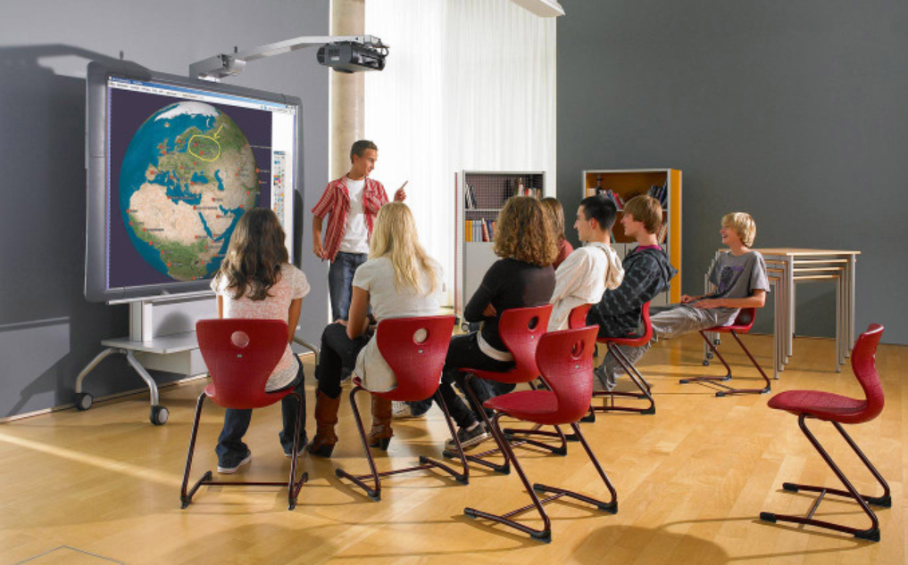
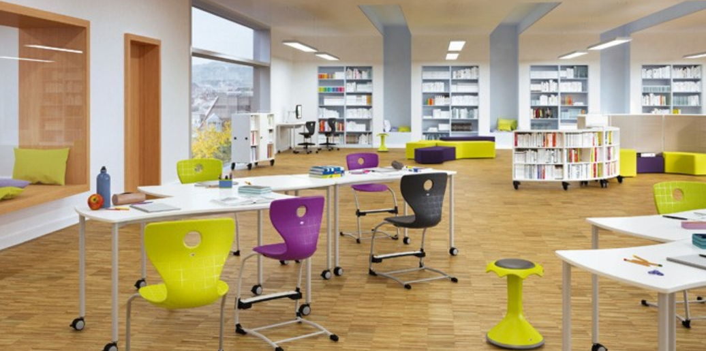

A tanulás mindig valamilyen fizikai térben történik, még akkor is, ha virtuális tanulási környezetben tanulunk. Testünk akkor is a fizikai környezetben van, amely reagál az őt körülvevő közegre. Figyelmen kívül hagyhatjuk ugyan fizikai közegünket, de elhagyni sosem tudjuk. Emiatt a tanulás helyszínének megfelelő berendezése, strukturálása kiemelt jelentőségű lehet a teljesítmény szempontjából (Stang 2019).
A nemzetközi szakirodalomban használt Learning Space (németül Lernwelt) fogalmát (Watson 2006, Oblinger 2006, Stang 2019) a magyar szakirodalom tanulási térként (Nádori-Prievara 2018), pedagógiai térként (Hercz-Sántha 2009, Sántha 2018), sőt helyenként tanulási környezetként használja. Fontos azonban a fogalmak közötti lényeges különbségeket tisztázni, mert nem teljesen fedik le egymást.
A tanulási környezet régóta része a neveléstudományi elméleteknek. A témával foglalkozók számos helyen definiálták már ezt a fogalmat. A tanulási környezet az a támogató környezet, amelyben minden feltétel adott ahhoz, hogy az emberek a lehető legjobban tanuljanak. A rendszer figyelembe veszi az egyéni tanulói sajátosságokat és támogatja a pozitív emberi kapcsolatokat, amelyek szükségesek a hatékony tanuláshoz. A definícióból kiindulva idetartozhat minden fizikai és virtuális környezet is, amelyben a tanuláshoz szükséges források rendelkezésre állnak ahhoz, hogy az egyén tanulási tevékenységet végezhessen.
A tanulási környezet olyan közeg, mely eszközeivel támogatja a tanítási-tanulási folyamatot és szereplőit a tanulás-tanítás során. A tanulási környezet fogalmánál kiemelt szerepet kapnak az IKT-eszközök, valamint a tanulás-tanítás módszertana. A tanulási környezet nem egységes definíciói arra is rávilágítanak, hogy egyes meghatározások a pedagógust, tanárt, tanítási tevékenységet végző személyt is a tanulási környezet részeként értelmezik, holott a tanulás mentor nélkül is gyakori. A tanulási környezet tehát sokkal inkább az informatikai eszközök és a módszertan felől közelít, míg a pedagógiai tér már kicsit közelebb visz minket a Learning Space valódi jelentéséhez.

A pedagógiai tér a pedagógiai architektúrához és az iskolai építészethez kapcsolódik, de nemcsak fizikai helyszíneket értenek alatta, melyeket az iskolákban tanulási tevékenységhez alakítottak ki, hanem a hozzá kapcsolódó tudásforrást is, amely a tanulás során információs bázisként jelenik meg. Ez a fogalom a tanulás támogató tér fizikai és információs oldalára koncentrál, elsősorban a formális oktatás helyszínein, az iskolákban.
A Learning Space/Lernwelt fogalmát a legjobban az újgenerációs tanulási tér2 megnevezés fedi le. Az újgenerációs tanulási tér olyan, szakemberek (pedagógusok, pedagógiai szakértők, könyvtárosok, építészek) által megkonstruált és berendezett tér, amely a legoptimálisabb térkihasználás mellett a legmagasabb fokon támogatja az ott folyó tanulási tevékenységet. Ez a szemlélet elsősorban a tanulásra és a tanulóra fókuszál, ezért teljesen lényegtelen, hogy mentor részt vesz-e a folyamatban vagy sem. Ebből kifolyólag egyéni és csoportos tanulási formákat is támogat. A tanulási tér azoknak az építészeti, dekorációs és berendezési tárgyak térbeli elhelyezésével, designjával kapcsolatos irányelveket jelenti, amelyek ösztönző, segítő, motiváló hatással vannak a tanulásra és a tanulókra. A tanulási terek minősége, designja jelentős mértékben befolyásolja a tanulási folyamatok eredményességét.

Rittelmeyer (1986) kutatásaiban a tanulási tereket vizsgálva arra a következtetésre jutott, hogy az esztétikának fontos szerepe van a tanulásnál. Úgy vélte, hogy a különböző életszakaszban lévő diákok más-más színeket, alakzatokat részesítenek előnyben, ezért a tanulási terek kialakításánál ezeket a tényezőket fontos figyelembe venni.
Egy ausztrál vizsgálat (Byers–Imms–Hartnell-Young 2014) kimutatta, hogy jelentős a teljesítménybeli különbség a hagyományos osztálytermi órák, valamint az újgenerációs tanulási terekben (Learning Spaces) történő tanulás között. A Melbourne-i Egyetem kutatói egy ausztrál általános iskolában végeztek ezzel kapcsolatban egy érdekes felmérést. Azt vizsgálták, hogy angolból és matematikából hogyan teljesítenek a diákok a hagyományos osztályteremben tartott órákon, illetve az újgenerációs tanulási terekben. A kutatás nullhipotézise az volt, hogy a tanulók teljesítménye, attitűdje, órai aktivitása független a helyszíntől, de tévedtek. Az eredmények ugyanis egyértelműen jelezték, hogy az újgenerációs tanulási terekben a diákok motiváltabbak, érdeklődőbbek voltak, a pedagógusok változatosabb tanítási módszereket alkalmaztak. Volt olyan osztály, amelyik annyira érdeklődővé vált az újgenerációs tanulási tér hatására, hogy maguk is aktív alakítóivá váltak a tanulási folyamatnak: saját feladatokat találtak ki annak érdekében, hogy a tanulási folyamatban a tanulási tér további részeit is kipróbálhassák, használhassák. Az egyik tanár úgy fogalmazta meg az újgenerációs tanulási tér pedagógiai munkájára való hatást, hogy „egyszerűen nem csinálhatom azt, amit korábban”, azaz a tanulási tér a pedagógusokat, mentorokat, stb. is újításra sarkallja, nemcsak a tanulókat.